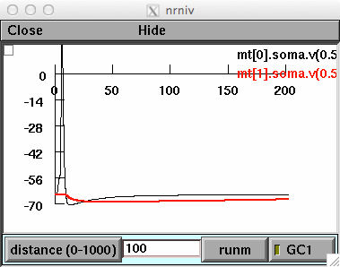
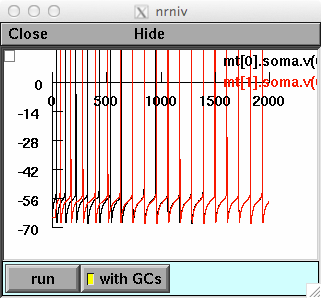
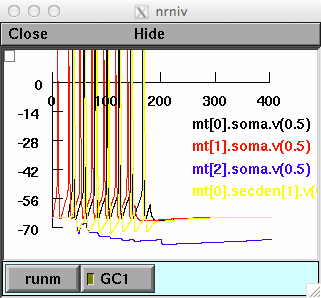

Model files for the entry "Olfactory Computations in Mitral-Granule Cell Circuits" of the Springer Encyclopedia of Computational Neuroscience by Michele Migliore and Tom Mctavish. The simulations illustrate two typical Mitral-Granule cell circuits in the olfactory bulb of vertebrates. The simulation file forfig1-springer.hoc refers to Fig.1 of the entry, and shows the somatic membrane potential of the two mitral cells. A somatic AP is elicited in M0 with a short current pulse, and generates an inhibitory postsynaptic potential in M1 with a peak amplitude that depends on the relative distance between the soma of the two mitral cells, unless GC1 is active. Users can change the active state of GC1 and the distance between M0 and M1, to see the distance-independence of the lateral inhibition when GC1 is active. Here is what you should see after running the forfig1-springer.hoc model in its default configuration:  forfig2.hoc reproduces the traces shown in Fig.2. The same somatic current injection (0.15nA) is delivered to both Mitral cells, with an initial relative latency. When the GCs are activated, at t=500, the firing activity will be synchronized:  forfig3-springer.hoc reproduces Fig.3 of the entry, and illustrate a gating effect:  The plots show membrane potential of M0-M2 soma and lateral dendrite of M0 at 800um from the soma, and the M0 membrane potential as a function of distance from the soma. In the simulations, all mitral cells receive the same input. Note that firing of M2 depends on the activation of GC1 by M1, which gates the backpropagation of the APs along the M0 lateral dendrite. As a consequence, GC2 will not be activated and M2 can fire APs. With GC1 inactive, APs from M0 backpropagate until they activate GC2, inhibiting M2. Under unix systems: to compile the mod files use the command nrnivmodl and run the simulation file with the command nrngui filename Under Windows systems: to compile the mod files use the "mknrndll" command. A double click on a simulation file will open the simulation window. Questions on how to use this model should be directed to michele.migliore@cnr.it